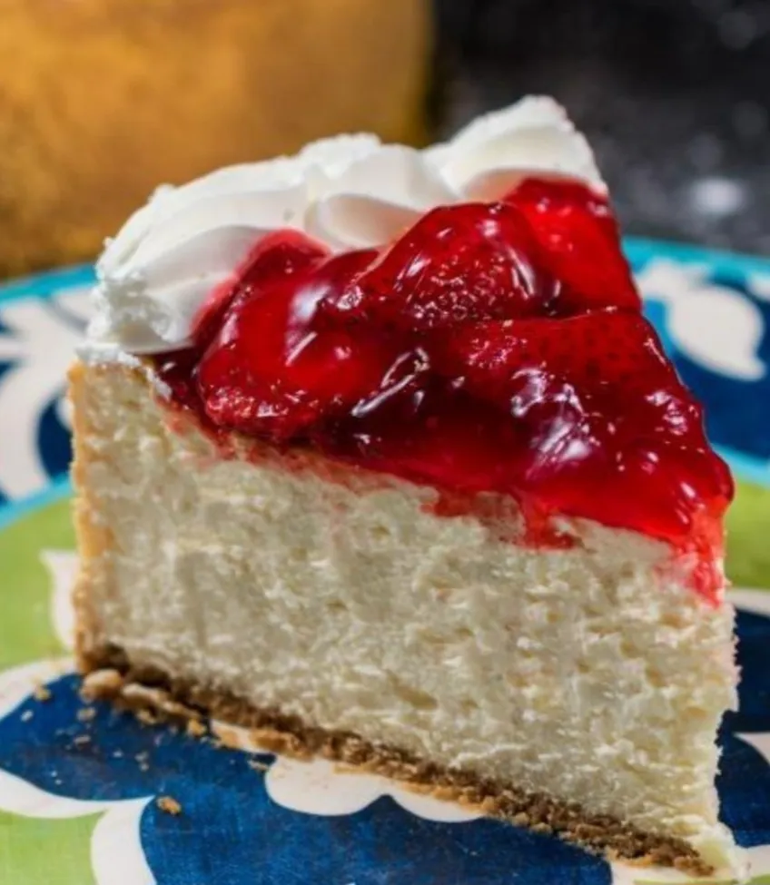
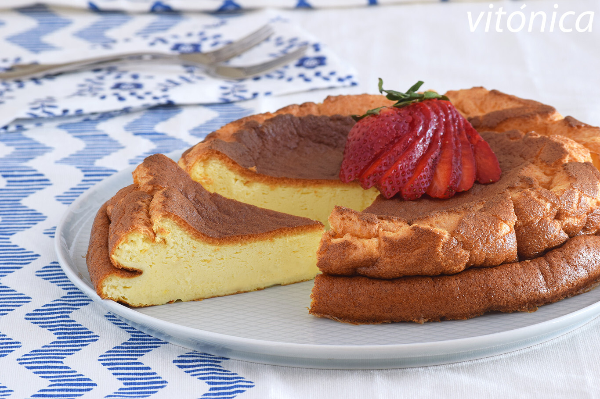
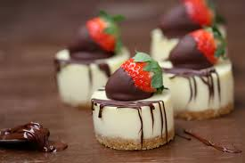
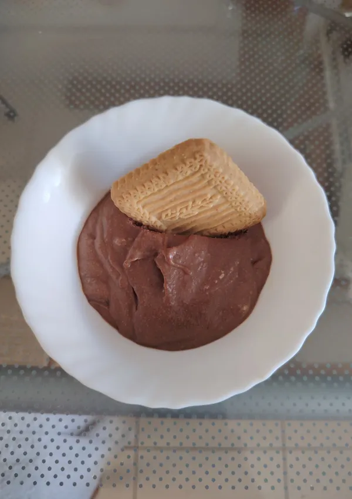

Cheesecake

Pasos
- Triturar las galletitas y mezclarlas con manteca derretida para armar la base.
- Presionar la mezcla en el molde y llevar al frío durante 15 minutos.
- Batir el queso crema con azúcar y huevos hasta obtener una mezcla homogénea.
- Verter sobre la base y hornear a 160°C durante 45 minutos.
- Dejar enfriar y cubrir con mermelada de frutos rojos.
- Refrigerar al menos 4 horas antes de servir.
Tarta de Yogurt

Pasos
- Mezclar galletitas trituradas con manteca y forrar la base del molde.
- Hornear la base a 180°C durante 10 minutos y dejar enfriar.
- Hidratar la gelatina sin sabor en agua fría y disolverla a baño María.
- Mezclar el yogurt natural con azúcar y la gelatina disuelta.
- Verter la preparación sobre la base fría y llevar al frío por 3 horas.
- Desmoldar y decorar con frutas frescas antes de servir.
Pastelitos de Chocolate

Pasos
- Estirar la masa de hojaldre y cortarla en cuadrados de aproximadamente 10 cm.
- Colocar en el centro chocolate picado o dulce de leche repostero.
- Cerrar los cuadrados formando pastelitos y pincelar con huevo batido.
- Hornear a 200°C durante 15 a 20 minutos hasta que estén dorados.
- Retirar del horno y dejar entibiar sobre una rejilla.
- Espolvorear con azúcar impalpable antes de servir.
Mousse de Chocolate

Pasos
- Derretir el chocolate junto con la manteca a baño María.
- Batir las yemas con el azúcar hasta que blanqueen.
- Incorporar las yemas al chocolate derretido y mezclar bien.
- Batir las claras a punto de nieve e integrarlas con movimientos envolventes.
- Distribuir la mezcla en copas individuales.
- Refrigerar al menos 4 horas y decorar con rulos de chocolate antes de servir.